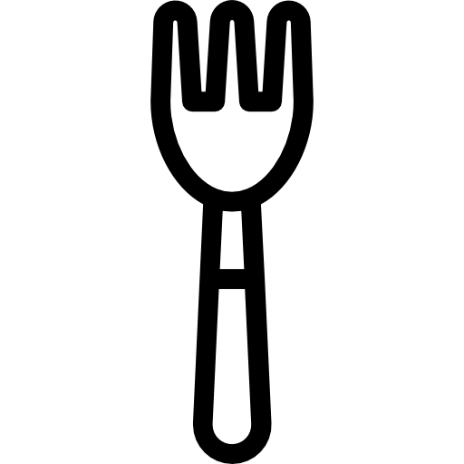

Ingredients
Tips
Tart Shell
1/2 cup Confectioners’ Sugar
1 1/2 cup All Purpose Flour
1 1/2 stick Unsalted Butter (room temp)
Vanilla Custard
1 cup Heavy Cream
1 cup Milk (any kind)
4 Egg Yolks
1 1/2 tbsp Cornstarch
Dash of Vanilla Extract
1/4 cup Granulated Sugar
Fruit Topping Suggestion
Strawberry
Blueberry
Kiwi
Blackberry
Raspberry
1 Room temperature butter is necessary for the tart shell, cold butter is too difficult to mix.
2 If you don’t have time to get butter to room temp, melted butter is okay but will make the tart base greasy out of the oven. If this happens, dry tart shells on a paper towel to lessen grease.
3 Don’t leave egg yolks at room temp too long, they will turn clumpy and curdle the custard.
4 Keep stirring the custard! To ensure an even cook, it’s essential to keep stirring and be patient.
1/18
Cream the 1 1/2 stick butter and 1/2 cup confectioner sugar together by hand or using an electric mixer.
2/18

Fold the 1 1/2 cup flour in with a spatula until a loose and crumbly pastry has formed. Do not overmix.
3/18

Gather pastry together and place between 2 parchement paper sheets. Roll pastry to be flat with 2-3 cm thickness. Place in fridge to cool at least 1 hour.
4/18

In a large heat resistant bowl, whisk together 6 egg yolks, 1 1/2 tbsp cornstarch, and 1/4 cup sugar until well blended. Set aside, we will pour the cream mixture in this bowl.
5/18
In a saucepan over medium heat, combine 1 cup milk, 1 cup heavy cream, and a dash of vanilla extract together and stir continuously for 5 minutes. This is your cream mixture. Be careful to not let the mixture boil.
6/18

Slowly pour hot cream mixture in 3 portions over egg yolk mixture. Whisk constantly to prevents the eggs from scrambling. This is your custard mixture.
7/18
Return custard mixture back to original sauce pan. Over low heat, constatly sitr for 8-10 minutes or until custard has thickened. Again: do not let the mixture boil! Boiling will cause curdling.
8/18
Pour custard mixture into the bowl used to make the egg yolk mixture, cover with cling film, and leave in fridge to cool for at least 1 hour.
9/18
Preheat oven to 350 F.
10/18

Take rolled out pastry out of fridge and use the tart ring press into the pastry to form the bottom of the tart. Using a fork, poke some holes in the base of the tart to allow heat to escape without leaving air bubbles in the tart.
11/18

Cut a vertical strip of pastry and wrap it on the inside of the tart ring, trimming off the edges and length as needed. This forms the walls of the tart.
12/18
Bake for 10-12 minutes or until the tart has turned a golden brown.
13/18
Take tarts out of the oven and let sit for a minute before transferring to a wire wrack for another 5 minutes. Do not try to take the tarts out of the rings while hot! The tarts are delicate when hot and will crumble
14/18
Once the tarts are warm, carefully push the center of the tart to gently pop it out of the tart ring and let it cool further to room temp. If you wait too long, the tarts will be too cold and stiff to push out of the tart ring smoothly.
15/18
Once the tart shells and custard have cooled completely, you are ready for assembly. Begin by washing and drying your fresh fruits and slicing neatly.
16/18
Spoon custard into the tart shell until it has almost reached the top of the shell, you’ll want to leave some room for the fruit to have support.
17/18
Assemble fruit on the tart in any style you enjoy.
18/18
Congratulations, you’ve finished making fruit tarts!
❮
❯
Instructions: overview
Tart Shell Stage 1
Cream the 1 1/2 stick butter and 1/2 cup confectioner sugar together by hand or using an electric mixer.
Fold the 1 1/2 cup flour in with a spatula until a loose and crumbly pastry has formed. Do not overmix.
Gather pastry together and place between 2 parchement paper sheets. Roll pastry to be flat with 2-3 cm thickness. Place in fridge to cool at least 1 hour.
In a large heat resistant bowl, whisk together 6 egg yolks, 1 1/2 tbsp cornstarch, and 1/4 cup sugar until well blended. Set aside, we will pour the cream mixture in this bowl.
In a saucepan over medium heat, combine 1 cup milk, 1 cup heavy cream, and a dash of vanilla extract together and stir continuously for 5 minutes. This is your cream mixture. Be careful to not let the mixture boil.
Slowly pour hot cream mixture in 3 portions over egg yolk mixture. Whisk constantly to prevents the eggs from scrambling. This is your custard mixture.
Return custard mixture back to original sauce pan. Over low heat, constatly sitr for 8-10 minutes or until custard has thickened. Again: do not let the mixture boil! Boiling will cause curdling.
Pour custard mixture into the bowl used to make the egg yolk mixture, cover with cling film, and leave in fridge to cool for at least 1 hour.
Vanilla Custard
Preheat oven to 350 F.
Take rolled out pastry out of fridge and use the tart ring press into the pastry to form the bottom of the tart. Using a fork, poke some holes in the base of the tart to allow heat to escape without leaving air bubbles in the tart.
Cut a vertical strip of pastry and wrap it on the inside of the tart ring, trimming off the edges and length as needed. This forms the walls of the tart.
Tart Shell Stage Two
Bake for 10-12 minutes or until the tart has turned a golden brown.
Take tarts out of the oven and let sit for a minute before transferring to a wire wrack for another 5 minutes. Do not try to take the tarts out of the rings while hot! The tarts are delicate when hot and will crumble.
Once the tarts are warm, carefully push the center of the tart to gently pop it out of the tart ring and let it cool further to room temp. If you wait too long, the tarts will be too cold and stiff to push out of the tart ring smoothly.
Once the tart shells and custard have cooled completely, you are ready for assembly. Begin by washing and drying your fresh fruits and slicing neatly.
Spoon custard into the tart shell until it has almost reached the top of the shell, you’ll want to leave some room for the fruit to have support.
Assemble fruit on the tart in any style you enjoy.
Congratulations, you’ve finished making fruit tarts!